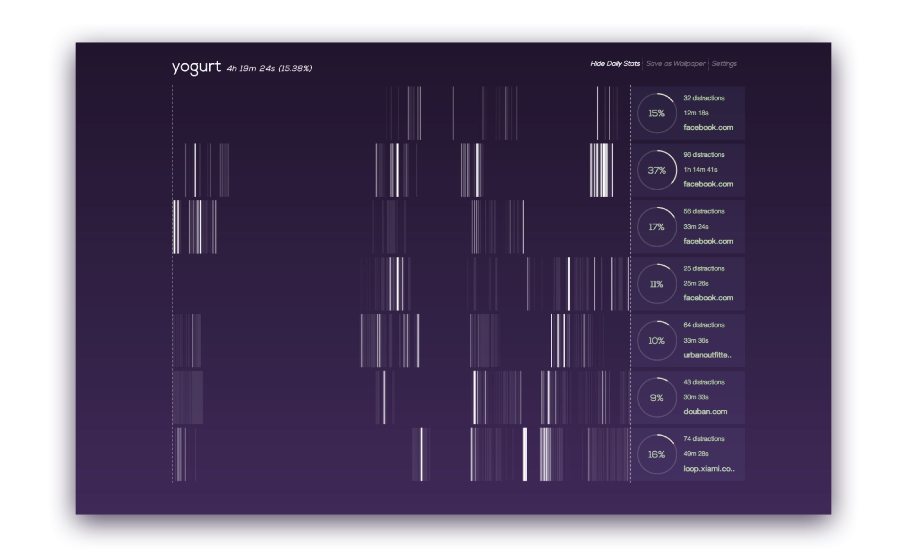

I sat down to reply an email, but ended up browsing Facebook for 30 minutes. To many of us, the experience of getting distracted by irrelevant information is familiar and frustrating. We often wonder how frequent we get distracted, how much time we have spent on distractions and how we can do better. From there, we started to imagine a visualization tool that can help answer these questions.
This was originally a final project of the class CS448 Data Visualization taught by Jeff Heer at Stanford. My team also includes Borui Wang, Zheng Shen and Jianfeng Hu.
We wanted to create a browser extension that raises awareness of online distraction and foster healthy information diet, by visualizing personal browsing history in an elegant and non-intrusive way.
The main challenge is to design a visualization that surfaces patterns from fragmented temporal data, maintains details in the data segments, and interactions that support exploration. Inspired by DNA art, we invented a visualization technique that resembles barcode. We call it barcode chart.
More specifically in this project, each row represents the time period of one day, and contains a number of vertical stripes. The x-position of the stripe represents the time of the visit in the day. The brightness indicates the level of distraction, which is defined by the user. The width of the stripe represents the duration of the visit. With this visualization, it’s easy for the user to see when and how much time she spents on sites at different levels of distraction.
To help the user further understand her browsing behavior, we added daily and weekly aggregated statistics on a collapsible side pane, including a ranked list of domains sorted by visiting frequency and duration.

With interaction technique similar to Brushing and Linking, we were able to let the user explore and discover more from the data. When the user hovers a particular stripe, not only she can see more details about that visit, but all other visits of the same domain within the past seven days will also be highlighted. The same will happen when the user hovers a domain from the ranked list.
Apart from the fragmented nature, DNA art also inspired us by being highly personal. In a way, our browsing behavior is also very personal and unique to us. To add a personal touch, the user can choose from a number of color themes and export the visualization as a desktop wallpaper.

We used Chome’s API to detect browser events, WebSQL for data storage, D3 to implement the visualization. With some Javascript optimizations, Yogurt can render about 10k SVG stripes within 0.2 seconds, and support smooth interactions.
← Back to my designs